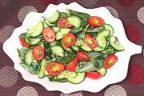

|
Cucumber & Purslane SaladCalifornia | ||||
| Serves: Effort: Sched: DoAhead: |
4 salad * 15 min Yes |
A pleasant variation from the usual salad ingredients. You can make it Asian style by replacing the olive oil with 1/2 T sugar. | |||
|
1 4 8 4 3 1/4 1/2 1/4 |
# oz oz t T c t t |
Cucumbers (1) Purslane (2) Tiny Tomatoes Sesame Seeds Olive Oil ExtV. Rice Vinegar Salt Pepper |
Make - (15 min)
|